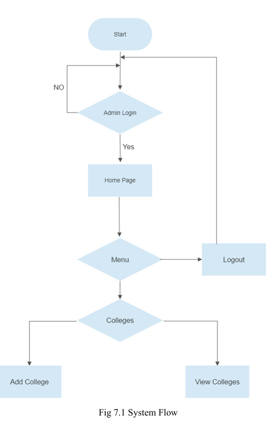

University Management System
The University Management System (UMS) is a comprehensive solution designed to streamline and automate administrative and
academic processes
within universities. It integrates functionalities such as student enrollment, faculty assignments, course management, and
performance
tracking into a single platform. The system enhances operational efficiency and reduces manual workload, making it an essential
tool for
modern educational institutions.
This project caters to the needs of students, faculty, and administrators by providing a user-friendly interface, robust backend
systems,
and advanced analytics tools. It serves as a one-stop solution for managing the complex workflows associated with university
operations.
Key Features
-
Student Management: Facilitates student enrollment, maintains academic records, and tracks progress throughout
their
academic journey.
-
Faculty Module: Enables faculty to manage their schedules, update course content, and monitor student
performance.
-
Course Management: Allows for the creation, modification, and management of courses, including scheduling and
syllabus
updates.
-
Attendance Tracking: Monitors student attendance in real-time, integrating with classroom IoT devices for
automation.
-
Gradebook: Maintains a comprehensive record of grades and generates reports for students, faculty, and
administrators.
-
Event Management: Organizes and tracks university events, providing a central calendar for all stakeholders.
Architecture
The system is built on a three-tier architecture, ensuring scalability, security, and maintainability. The three layers are:
-
Presentation Layer: A responsive web-based frontend developed using ReactJS, offering an intuitive user
experience
for students, faculty, and administrators.
-
Application Layer: Powered by Node.js, it handles business logic, API management, and user authentication.
-
Data Layer: Utilizes PostgreSQL for data persistence, ensuring secure and efficient storage of university data.

Figure 1: University Management System Architecture
Implementation Details
The development of the UMS followed an agile methodology, with iterative cycles of planning, development, testing, and
deployment. The
system was designed to ensure high availability and fault tolerance, incorporating advanced features like load balancing and
database
replication.
Modules:
-
User Authentication: Implements secure login and role-based access control for students, faculty, and
administrators.
-
Course Scheduler: Generates dynamic schedules based on faculty availability and classroom resources.
-
Grade Analytics: Provides insights into student performance, identifying trends and areas for improvement.
Challenges and Resolutions
One of the major challenges was managing the integration of multiple modules while ensuring data consistency across the system.
This was
resolved by implementing an event-driven architecture that uses message queues for inter-module communication. Another challenge
was
optimizing real-time attendance tracking, which was addressed through the integration of IoT devices with RESTful APIs.
Results and Impact
- Operational Efficiency: Reduced administrative workload by 40% through process automation.
- Student Engagement: Improved student participation in academic activities by 25% through real-time
notifications and
performance tracking.
- Faculty Productivity: Enabled faculty to manage their schedules and grading more efficiently, saving an
average of 5
hours per week.
Results
Future Enhancements
- Develop a mobile application for improved accessibility and convenience.
- Incorporate AI-driven predictive analytics to identify at-risk students and suggest personalized learning paths.
- Integrate support for additional languages to cater to diverse student demographics.
- Expand IoT integration to include automated resource allocation for classrooms and labs.
Use Cases
- Universities: Manage academic operations, faculty schedules, and student performance tracking.
- Faculty: Organize courses, track attendance, and monitor student grades efficiently.
- Students: Access course materials, track academic progress, and stay updated on university events.
Team Members